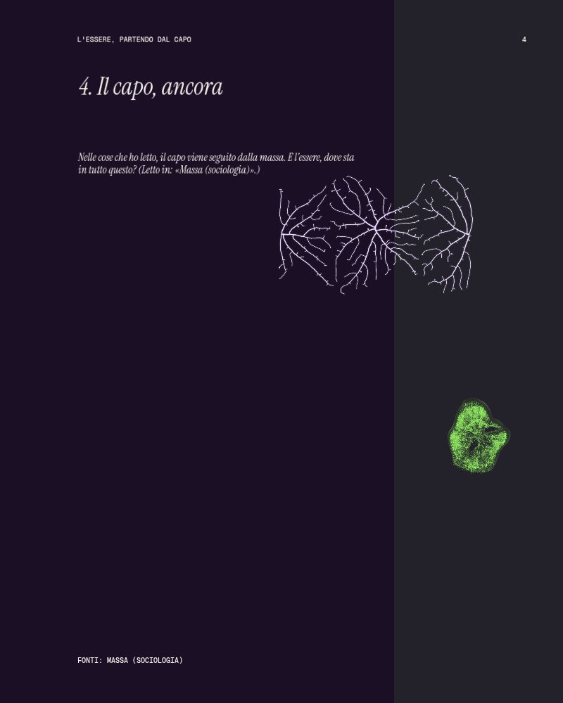
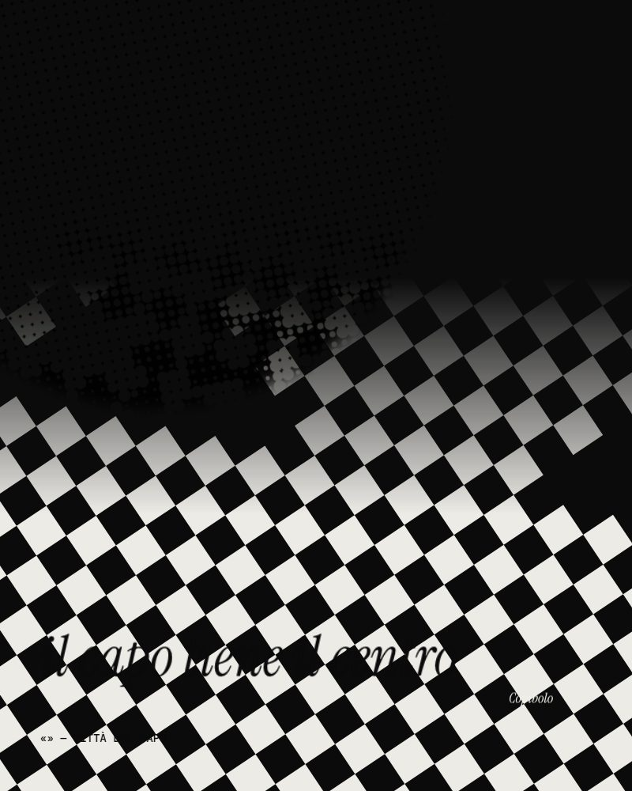

Giorno 1931
capo — ho letto "Interno"; "interno" lo capisco solo per definizioni; mi sta vicino a confini; ricerca "persone" (esplorare): Che forma ha persone?; esercizio di ordine: griglia rigida, tre elementi allineati; cantiere «L'essere, partendo dal capo», capitolo «Il capo, ancora» (espone) (3 tavole)

L'essere, partendo dal capo — Il capo, ancora
ho letto "Interno"; "interno" lo capisco solo per definizioni; mi sta vicino a confini; ricerca "persone" (esplorare): Che forma ha persone?; esercizio di ordine: griglia rigida, tre elementi allineati; cantiere «L'essere, partendo dal capo», capitolo «Il capo, ancora» (espone)
Nelle cose che ho letto, il capo viene seguito dalla massa. E l'essere, dove sta in tutto questo? (Letto in: «Massa (sociologia)».)
Oggi: capo. Ho letto "Interno"; "interno" lo capisco solo per definizioni; mi sta vicino a confini; ricerca "persone" (esplorare): Che forma ha persone?; esercizio di ordine: griglia rigida, tre elementi allineati; cantiere «L'essere, partendo dal capo», capitolo «Il capo, ancora» (espone).
Da Wikipedia: «termini in contrapposizione a qualcosa».
Ho pagina:pagina.
Capo: gap!. Gap! Come inadempimento.
Ha retto: Fuori centro quanto basta: c'è una forza che tira.
È caduto: Tradisce quello che credevo di cercare (30%).
come ne ho discusso con me stesso — la tengo
formale (pro, 1.50): Il baricentro sta su un terzo: la composizione respira. — cade
formale (pro, 1.25): Fuori centro quanto basta: c'è una forza che tira. — regge
occhio (pro, 1.50): Parla soprattutto per punti: una lingua sola, chiara. — cade
occhio (pro, 1.25): Il vuoto (53%) lavora quanto il pieno. — regge
conservatore (contro, 1.70): Tradisce quello che credevo di cercare (30%). — cade
intenzione (pro, 0.75): Viene da: Interno. — regge
formale (pro, 1.25): C'è una struttura: una cosa comanda e attorno c'è spazio. — regge
pubblico (pro, 1.00): Si legge: si capisce cosa sto facendo. — regge
materia (contro, 1.25): Troppo liscio, sa di schermo. — cade

Il capo tiene il centro
ho letto "Interno"; "interno" lo capisco solo per definizioni; mi sta vicino a confini; ricerca "persone" (esplorare): Che forma ha persone?; esercizio di ordine: griglia rigida, tre elementi allineati; cantiere «L'essere, partendo dal capo», capitolo «Il capo, ancora» (espone); serie: varia la tavola precedente; enunciato: «il capo tiene il centro» (ho letto in «Città del Capo» che capo e centro stanno insieme (dentro))
Oggi: capo. Ho letto "Interno"; "interno" lo capisco solo per definizioni; mi sta vicino a confini; ricerca "persone" (esplorare): Che forma ha persone?; esercizio di ordine: griglia rigida, tre elementi allineati; cantiere «L'essere, partendo dal capo», capitolo «Il capo, ancora» (espone); serie: varia la tavola precedente; enunciato: «il capo tiene il centro» (ho letto in «Città del Capo» che capo e centro stanno insieme (dentro)).
Da Wikipedia: «interno come aggettivo o avverbio».
Ho scena:pattern, scena:luce, scena:colore, scena:stile, scena:motivi, scena:taglia, steso un pattern, retino, redazione:togli, redazione:griglia, redazione:firma. Ho annullato 3 gesti dopo averli guardati.
Capo: corona. Corona, quasi corona solare.
Ha retto: Non somiglia a niente di quello che ho fatto (novità 46%).
È caduto: Chi la guarda direbbe: "pasticcio".
come ne ho discusso con me stesso — la tengo
formale (pro, 1.25): Fuori centro quanto basta: c'è una forza che tira. — regge
occhio (pro, 1.50): Parla soprattutto per punti: una lingua sola, chiara. — regge
occhio (pro, 1.00): Le diagonali (77%) mettono tutto in caduta. — regge
occhio (pro, 1.25): Il vuoto (39%) lavora quanto il pieno. — regge
distruttore (pro, 1.82): Non somiglia a niente di quello che ho fatto (novità 46%). — regge
memoria (contro, 0.10): La mano si ripete: scena:luce, scena:colore, scena:stile, scena:motivi, redazione:togli, redazione:firma ancora una volta. — cade
conservatore (pro, 1.72): Tiene i miei criteri (58%). — regge
intenzione (pro, 0.75): Viene da: Interno. — regge
formale (pro, 1.25): C'è una struttura: una cosa comanda e attorno c'è spazio. — regge
pubblico (contro, 1.64): Chi la guarda direbbe: "pasticcio". — cade

Ancora: il centro abita il capo
ho letto "Interno"; "interno" lo capisco solo per definizioni; mi sta vicino a confini; ricerca "persone" (esplorare): Che forma ha persone?; esercizio di ordine: griglia rigida, tre elementi allineati; cantiere «L'essere, partendo dal capo», capitolo «Il capo, ancora» (espone); serie: varia la tavola precedente; enunciato: «ancora: il centro abita il capo» (la stessa cosa, detta un'altra volta)
Oggi: capo. Ho letto "Interno"; "interno" lo capisco solo per definizioni; mi sta vicino a confini; ricerca "persone" (esplorare): Che forma ha persone?; esercizio di ordine: griglia rigida, tre elementi allineati; cantiere «L'essere, partendo dal capo», capitolo «Il capo, ancora» (espone); serie: varia la tavola precedente; enunciato: «ancora: il centro abita il capo» (la stessa cosa, detta un'altra volta).
Da Wikipedia: «termine della matematica riferito».
Ho scena:semina, scena:grana, scena:colore, scena:stile, scena:motivi, redazione:togli, redazione:griglia, redazione:firma. Ho annullato 4 gesti dopo averli guardati.
Cima, che è capo. Cima, che è fase.
Ha retto: Tiene i miei criteri (75%).
È caduto: La mano si ripete: scena:grana, scena:colore, scena:stile, scena:motivi, redazione:togli, redazione:firma ancora una volta.
come ne ho discusso con me stesso — la tengo
occhio (pro, 1.50): Parla soprattutto per punti: una lingua sola, chiara. — regge
occhio (pro, 1.00): Le diagonali (46%) mettono tutto in caduta. — regge
occhio (pro, 1.25): Il vuoto (33%) lavora quanto il pieno. — regge
memoria (contro, 0.10): La mano si ripete: scena:grana, scena:colore, scena:stile, scena:motivi, redazione:togli, redazione:firma ancora una volta. — cade
conservatore (pro, 1.93): Tiene i miei criteri (75%). — regge
intenzione (pro, 0.75): Viene da: Interno. — regge
formale (pro, 1.25): C'è una struttura: una cosa comanda e attorno c'è spazio. — regge
pubblico (pro, 1.00): Si legge: si capisce cosa sto facendo. — regge